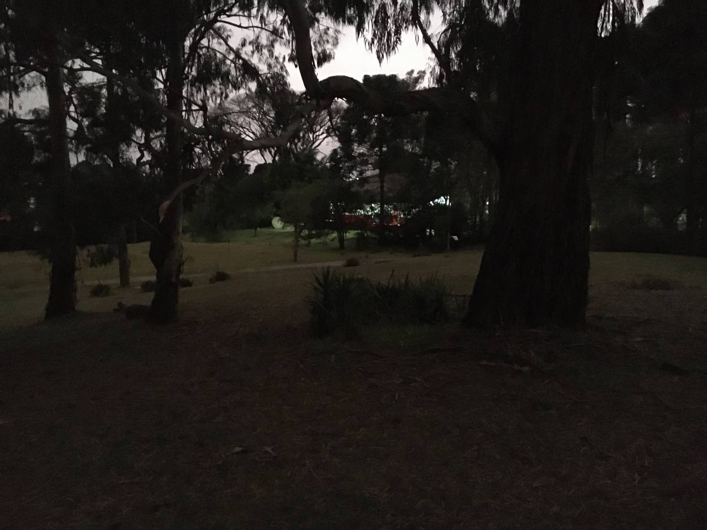

câmeras de telefone e fotos no escuro travam uma guerra ferrenha a tempos
mas é o registro que eu posso ter, já que cortaram as árvores junto com minhas lembranças
quando eu fotografei à tarde pela última vez, não imaginava que seria a última mas tornou-se no ano que sucedeu
eu saí do meu grupo meses antes de quando falam, e a prova disso é como me tratam quando eu o visito
não é à toa que dizem que o grupo se mantém mesmo mudando de casa, mas o apego que eu tenho é com ela
